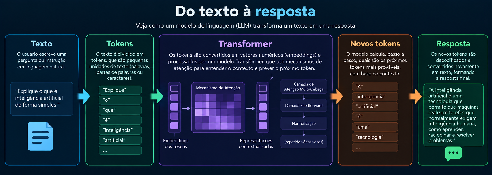

O que são LLMs?
LLM é a sigla para Large Language Model, ou Grande Modelo de Linguagem. Esses modelos de
Inteligência
Artificial são desenvolvidos para trabalhar com linguagem e podem realizar tarefas como geração de
textos, respostas a perguntas, resumos, traduções, classificação de informações e auxílio na
programação.
Durante o treinamento, um modelo de linguagem processa grandes quantidades de dados e aprende padrões e
relações presentes nas sequências de texto. O modelo não funciona simplesmente armazenando uma resposta
pronta para cada pergunta. Ele utiliza os padrões aprendidos e o contexto recebido para calcular quais
tokens são adequados para continuar uma sequência.
Os LLMs modernos utilizam redes neurais profundas e, em muitos casos, são baseados na arquitetura
Transformer. Essa arquitetura possibilitou grandes avanços no processamento de linguagem natural e se
tornou uma das principais tecnologias utilizadas no desenvolvimento dos grandes modelos de linguagem
atuais.
Esses modelos podem ser integrados a sites, aplicativos, assistentes virtuais e diversos outros
sistemas, permitindo que pessoas utilizem linguagem natural para interagir com aplicações de
Inteligência Artificial.
Transformers e Tokens
A arquitetura Transformer foi apresentada em 2017 e trouxe importantes avanços para o
processamento de
sequências. Um de seus elementos fundamentais é o mecanismo de atenção, que permite ao modelo considerar
relações entre diferentes partes das informações processadas.
Antes de um texto ser processado por um modelo de linguagem, ele normalmente é dividido em unidades
chamadas tokens. Um token pode representar uma palavra inteira, parte de uma palavra, sinais de
pontuação ou outros elementos, dependendo do sistema de tokenização utilizado.
Esses tokens são transformados em representações numéricas que podem ser processadas pela rede neural. O
modelo utiliza essas representações e o contexto disponível para realizar cálculos e produzir novos
tokens.
Quando um modelo gera uma resposta, portanto, o texto é produzido progressivamente. A partir dos tokens
existentes, o modelo calcula probabilidades para possíveis continuações e seleciona novos tokens de
acordo com seu processo de geração.

Prompts e IA Generativa
Um prompt é a informação ou instrução fornecida a um modelo de Inteligência Artificial para orientar a
geração de uma resposta. Um prompt pode ser uma pergunta simples, uma descrição detalhada de uma tarefa
ou até mesmo um conjunto maior de informações que fornecem contexto ao modelo.
A forma como uma instrução é escrita pode influenciar significativamente o resultado. Informações sobre
o objetivo, contexto e formato desejado podem ajudar o modelo a produzir uma resposta mais adequada para
determinada tarefa.
A Inteligência Artificial Generativa não está limitada à geração de textos. Existem modelos capazes de
gerar imagens, áudio, vídeo, código e outros conteúdos. Dependendo do sistema, o usuário pode fornecer
textos, imagens ou diferentes tipos de informações como entrada.
Essas tecnologias são utilizadas em áreas como educação, programação, criação de conteúdo, atendimento,
pesquisa e produtividade. Entretanto, os resultados produzidos por modelos generativos devem ser
avaliados, pois esses sistemas também podem gerar informações incorretas ou inadequadas.